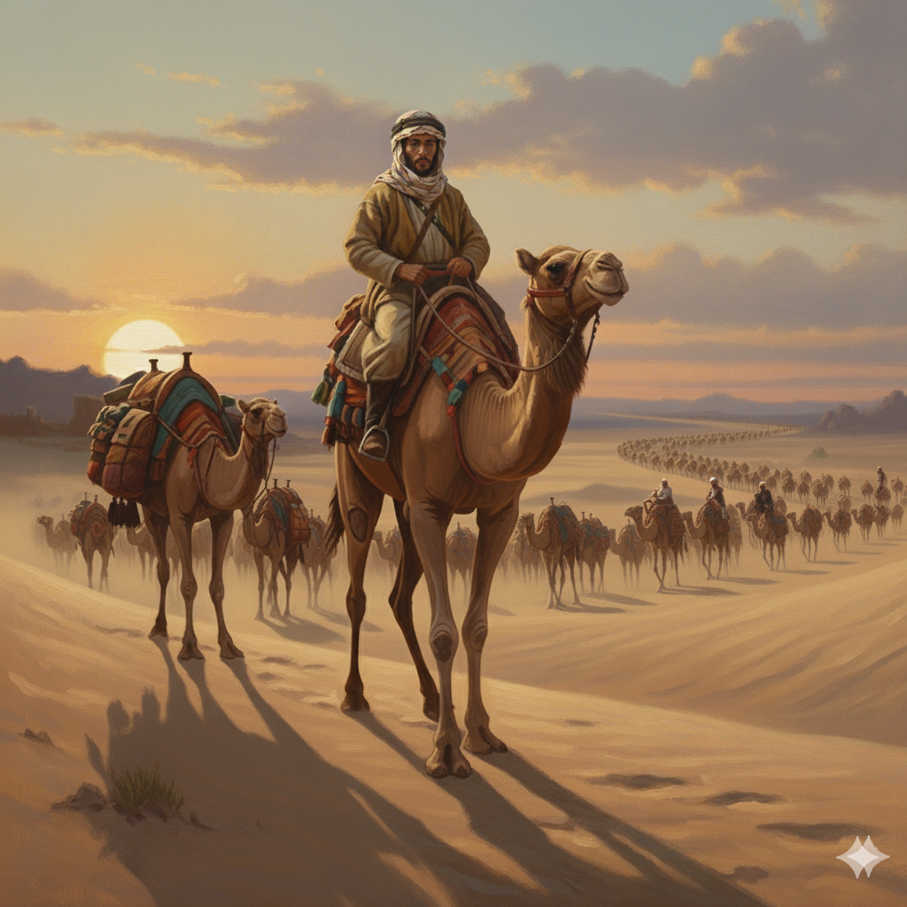

قصيدة "سما لك شوقٌ" تتحدث عن شعوره بالانتماء والاشتياق لبلاده واهله بعدما سافر وترك اهله و اسلحته عند السموأل ليحميها وذهب للشام مع مجموعه من قومه عند قيصر الروم ، ويصف ملامح الحياة التي تركها وراءه
سما لكَ شوقٌ
اضغط على البيت ليظهر لك الشرح.
سَما لَكَ شَوقٌ بَعدَما كانَ أَقصَرا
الشرح: تصاعد وزاد الشوق بعدما كان قليلًا؛ .
وَحَلَّت سُلَيمى بَطنَ قَوِّ فَعَرعَرا
الشرح:يتحدث عن حبيبته سليمى التي اصبحت لاجئه بعيدا عن وطنها ويشرح المدن التي على طريقها .
كِنانِيَّةٌ بانَت وَفي الصَدرِ وُدُّها
الشرح: هي من قبيله كنانه .
مُجاوِرَة غَسّانَ وَالحَي يَعمُرا
الشرح: اي انها ابتعدت عن موطنها واصبحت تسكن بجانب دوله الغساسنة شمال جزيره العرب .
بِعَينَيَّ ظَعنُ الحَيِّ لَمّا تَحَمَّلوا
الشرح: يقول ان منظر سفرهم هو وجماعته لازال عالقا في عينه .
لدى جانِبِ الأَفلاجِ مِن جَنبِ تَيمَرا
الشرح: يصف الموقع الذي تجهزو به للانطلاق بالسفر.
فَشَبَّهتَهُم في الآلِ لَمّا تَكَمَّشوا
الشرح:فشبههم بالسراب لما ذهبو مسرعين في مشيهم.
حَدائِقَ دومِ أَو سَفيناً مُقَيَّرا
الشرح: ويكمل التشبيه بانهم مثل شجر النخيل الكثيف او انهم السفن التي اعدت للسفر.
أَوِ المُكرَعاتِ مِن نَخيلِ اِبنِ يامِنٍ
الشرح: أو انها اجود النخيل التي يمتلكها ابن يامن .
دُوَينَ الصَفا اللائي يَلينَ المُشَقَّرا
الشرح: يصف موقع نخيل ابن يامن التي تقع في الشرقيه بالاحساء تحديدا .
سَوامِقَ جَبّارَ أَثيثٍ فُروعَهُ
الشرح: يصف هذه النخيل انها مرتفعه وضخمة وغزيرة.
وَعالَينَ قُنواناً مِنَ البُسرِ أَحمَرا
الشرح:وتملك التمر الاحمر الذي اقترب من النضج.
حَمَتهُ بَنو الرَبداءِ مِن آلِ يامِنٍ
الشرح:وحموه بنو الربداء من قبيله صاحب النخيل .
بِأَسيافِهِم حَتّى أَقَرَّ وَأَوقَرا
الشرح:حتا كمل نضجه واصبحت ثقيله .
وَأَرضى بَني الرَبداءِ وَاِعتَمَّ زَهوُهُ
الشرح: واعجبو بالنتيجه.
وَأَكمامُهُ حَتّى إِذا ما تَهَصَّرا
الشرح:واصبحت تتدلى الاغصان جاهزه للقطف.
أَطافَت بِهِ جَيلانَ عِندَ قِطاعِهِ
الشرح: اجتمعوا حوله العمال ليقطفوه.
تُرَدِّدُ فيهِ العَينَ حَتّى تَحَيَّرا
الشرح: تنظر له العين من كل جانب متعجبة من جماله .
كَأَنَّ دُمى شَغف عَلى ظَهرِ مَرمَرٍ
الشرح:فيرجع مره اخرى للقافله ويشبه النساء من بعيد بالدمى على المرمر الابيض
كَسا مُزبِدَ الساجومِ وَشياً مُصَوَّرا
الشرح:وهذا المرمر كزبد وادي الساجوم المزخرف بالصور.
غَرائِرُ في كَنٍّ وَصَونٍ وَنِعمَةٌٍ
الشرح:يمدحهم بأنهم نساء نعمة وحياه كريمة .
يُحَلَّينَ ياقوتاً وَشَذراً مُفَقَّرا
الشرح:يلبسن الياقوت و الذهب الذي مصمم على شكل فقرات.
وَريحَ سَناً في حُقَّةٍ حِميَرِيَّةٍ
الشرح:ويمدح العطور التي يستخرجونها من نبات السنا ويضعونها في وعاء يستخدمونه ملوك حمير .
تُخَصُّ بِمَفروكٍ مِنَ المِسكِ أَذفَرا
الشرح:اذفرا يعني رحيه قويه وثابته.
وَباناً وَأُلوِيّاً مِنَ الهِندِ ذاكِياً
الشرح: الوي هو من اجود انواع العود و اطيبها .
وَرَنداً وَلُبنىً وَالكِباءَ المُقَتَّرا
الشرح:ويذكر انواع النباتات التي يستخدمونها بالعطور و البخور.
غَلِقنَ بِرَهنٍ مِن حَبيبٍ بِهِ اِدَّعَت
الشرح:يقول ان هاؤلاء الفتيات ذهبن بقلبه معهن القلب الذي ادعت سليمى انه لها .
سُلَيمى فَأَمسى حَبلُها قَد تَبَتَّرا
الشرح:ولكن حبل وصالهم قد تقطع .
وَكانَ لَها في سالِفِ الدَهرِ خُلَّةٌ
الشرح:وقد كان لها حبيب وهو يقصد نفسه امرؤ القيس.
يُسارِقُ بِالطَرفِ الخِباءَ المُسَتَّرا
الشرح:كان يحاول ان يسرق نظره الى خيمتها المستوره .
إذا نالَ مِنها نَظرَةً ريعَ قَلبُهُ
الشرح:فأذا نال تلك النظره ارتاع قلبه و اضطرب .
كما ذُعِرَت كَأسُ الصَبوحِ المُخَمَّرا
الشرح:كما يضطرب اذا شرب خمر بالصباح.
نزيفٌ إِذا قامَت لِوَجهٍ تَمايَلَت
الشرح:يصف مشيتها كمشيه التعبان والمرهق .
تُراشي الفُؤادَ الرَخصَ أَلّا تَخَتَّرا
الشرح:وهي تدافع قلبها اللين الضعيف ان لا ينهار.
أأَسماءُ أَمسى وُدُّها قَد تَغَيَّرا
الشرح:وهنا قد انتقل بوصفه الى شخص اخر وهي حبيبه اخرى له وقد سمع انها تغيرت عليه.
سَنُبدِلُ إِن أَبدَلتِ بِالوُدِّ آخَرا
الشرح:يهدد انه هو ايضا سيتغير.
تَذَكَّرتُ أَهلي الصالِحينَ وَقَد أَتَت
الشرح:يقول انه تذكر اهله الصالحين وحزن .
عَلى خَمَلى خوصُ الرِكابِ وَأَوجَرا
الشرح:وقد وصلت ركابه المتعبه و الهزيله الى حدود الشام .
فَلَمّا بدت حَورانُ وَالآلُ دونَهُا
الشرح:فلما وصل الى مدينه حوران تارك بلاده وراءه .
نَظَرتَ فَلَم تَنظُر بِعَينَيكَ مَنظَرا
الشرح:انه نظر فلم ينظر لشيء يعرفه كل شيء غريب.
تَقَطَّعُ أَسبابُ اللُبانَةِ وَالهَوى
الشرح:لم يعد لديه اسباب للعاطفه ولا الهوى .
عَشِيَّةَ جاوَزنا حَماةَ وَشَيزَرا
الشرح:بعدما تجاوز حماه وشيزر في الشام.
بِسَيرٍ يَضُجُّ العَودُ مِنهُ يَمُنُّهُ
الشرح:انهم يسيرون بطريق يتعب منه الجمل .
أَخو الجَهدِ لا يُلوي عَلى مَن تَعَذَّرا
الشرح:ولا نلتفت لمن يتعذر بسبب التعب .
وَلَم يُنسِني ما قَد لَقيتُ ظَعائِناً
الشرح:ولم ينسى المسافرات .
وَخَملاً لَها كَالقَرِّ يَوماً مُخَدَّرا
الشرح:ولم ينسى هوادجهم وستائرهم.
كَأَثلٍ مِنَ الأَعراضِ مِن دونِ بَيشَةٍ
الشرح:يشببه الهوادج وما عليها من ستائر بشجر الاثل.
وَدونَ الغُمَيرِ عامِداتٍ لِغَضوَرا
الشرح:ويصف موقعهم وطريقهم انهم ذاهبون لغضور.
فَدَع ذا وَسَل لا هُمَّ عَنكَ بِجِسرَةٍ
الشرح:يكلم نفسه ويقول دع عنك هذه الذكرايات وسلي نفسك بهذه الناقه التي تركبها .
ذُمولٍ إِذا صامَ النَهارُ وَهَجَّرا
الشرح:وتمشي بثبات ولا تتعب اذا ارتفعت الشمس وزادت حرارتها.
تتقَطع غيطاناً كَأَنَّ مُتونَها
الشرح:انها تقطع بسيرها السهول و المرتفعات.
إِذا أَظهَرَت تُكسى مُلاءً مُنَشَّرا
الشرح:وشبهه هذه المرتفعات وقت الظهر كانها ملاحف منشوره .
بَعيدَةُ بَينَ المَنكِبَينِ كَأَنَّها
الشرح:ان صدرها عريض.
تَرى عِندَ مَجرى الضَفرِ هِرّاً مُشَجَّرا
الشرح:وانها تجري بسرعه كأن ورائها اسد مفترس.
تُطايِرُ ظِرّانَ الحَصى بِمَناسِمٍ
الشرح:وانها تطير الحصى باطرافها.
صِلابِ العُجى مَلثومُها غَيرُ أَمعَرا
الشرح:وتظرب هذا الحصى الحاد ولم تتاثر اطرافها .
كَأَنَّ الحَصى مِن خَلفِها وَأَمامِها
الشرح:يشبهه هذا الحصى الذي يتطاير منها.
إِذا نَجَلَتهُ رِجلُها خَذفُ أَعسَرا
الشرح:كانها رجل اعسر يرمي باليسار بشكل عشوائي.
كَأَنَّ صَليلَ المَروِ حينَ تطيره
الشرح:وان صوت الحصى حينما تضربه بأقدامها.
صَليل زُيوفٍ يُنتَقَدنَ بِعَبقَرا
الشرح:مثل صوت احتكاك النقود النحاسيه المزيفه.
عَلَيها فَتىً لَم تَحمِلِ الأَرضُ مِثلَهُ
الشرح:وبعدما انتهى من وصف الناقه يتكلم عن نفسه وهو الذي فوق الناقه.
أَبَرَّ بِميثاقٍ وَأَوفى وَأَصبَرا
الشرح:يمدح نفسه بأنه صادق بعهوده ووفي وصبور.
هُوَ المُنْزِلُ الآلافَ من جَوّ ناعِطٍ
الشرح:هو الذي انزل قبيله بني اسد من حصن ناعط.
بَني أَسَدٍ حَزناً مِنَ الأَرضِ أَوعَرا
الشرح:وجعلهم يسكنون بالارض الوعره.
وَلَو شاءَ كانَ الغَزوُ مِن أَرضِ حِميَرٍ
الشرح:وهنا كان يقول انه كان يستطيع ان يطلب المساعده من اقاربه من قبيله حمير.
وَلَكِنَّهُ عَمداً إِلى الرومِ أَنفَرا
الشرح:ولكنه تعمد ان يذهب الى قيصر الروم لأن عدوه من حلفاء الفرس .
بَكى صاحِبي لَمّا رَأى الدَربَ دونَهُ
الشرح:بكى صاحبه عمرو بعدما شاف الدرب.
وَأَيقَنَ أَنّا لاحِقانِ بِقَيصَرا
الشرح:وتيقن انه ذاهب فعلا الا قيصر الروم.
فَقُلتُ لَهُ لا تَبكِ عَينُكَ إِنَّما
الشرح:يواسيه .
نُحاوِلُ مُلكاً أَو نَموتَ فَنُعذَرا
الشرح:ويقول اننا نحاول ان نسترجع الملك او اننا نموت فيعذروننا لأننا حاولنا.
وَإِنّي زَعيمٌ إِن رَجِعتُ مُمَلَّكاً
الشرح:فأنا اضمن لك اذا رجعنا لديارنا.
بِسَيرٍ تَرى مِنهُ الفُرانِقَ أَزوَرا
الشرح:بجيش وقوه كبيره.
عَلى لاحِبٍ لا يَهتَدى بِمَنارِهِ
الشرح:وهنا يصف الطريق الذي هم فيه بانه ليس به علامات خير.
إِذا سافَهُ العَودُ النُباطِيُّ جَرجَرا
الشرح:ويتعب اقوى الجمال.
عَلى كُلِّ مَقصوصِ الذُنابى مُعاوِدٍ
الشرح:وانه اذا رجع لهذا الطريق سيسلكه بخيل.
بَريدَ السرى بِاللَيلِ مِن خَيلِ بَربَرا
الشرح: بالخيل الذي تعود على السير .
أَقَبَّ كَسَرحانِ الغَضى مُتَمَطِّرٍ
الشرح:رشيق الجسد كالذئب الذي يتخفى خلف نبات الغضى.
تَرى الماءَ مِن أَعطافِهِ قَد تَحَدَّرا
الشرح:وترا العرق يتصبب من جوانبه من شده المشي.
إِذا زُعتُهُ مِن جانِبَيهِ كِلَيهِما
الشرح:اذا امرته بالركض .
مَشى الهَيدَبى في دَفِّهِ ثُمَّ فَرفَرا
الشرح:: يسير بتبختر ويقفز بخفه من صحته الجيده .
إِذا قُلتُ رَوَّحنا أَرَنَّ فُرانِقٌ
الشرح:اذا قلت لنتسلى قام واحد من مقدمه الجيش بالغناء .
عَلى جَلعَدٍ واهي الأَباجِلِ أَبتَرا
الشرح:على خيل لينه العروق ومقطوعه الذنب .
لَقَد أَنكَرَتني بَعلَبَكُّ وَأَهلُها
الشرح:والان يعود الى حالته السيئه حنما وصل بعلبك في الشام و انكروه ولم يعرفوه.
وَلَاِبنُ جُرَيجٍ في قُرى حِمصَ أَنكَرا
الشرح:وحتا ابن جريج لم يعرفه.
نَشيمُ بَروقَ المُزنِ أَينَ مُصابُهُ
الشرح:ننظر من بعيد نبحث عن السحاب والخير اين ينزل.
وَلا شَيءَ يُشفي مِنكِ يا اِبنَةَ عَفزَرا
الشرح:ولكن لاشيء يشفي من الم الشوق لك يا ابنه عفزرا.
مِنَ القاصِراتِ الطَرفِ لَو دَبَّ مُحوِلٍ
الشرح:يصفها بانها قاصره طرف لا تنظر للرجال وتخالطهم.
مِنَ الذَرِّ فَوقَ الإِتبِ مِنها لَأَثَّرا
الشرح:وانها رقيقه لدرجه انه اذا مشى على كتفها النمل لترك اثر من شده الرقه.
لَهُ الوَيلُ إِن أَمسى وَلا أُمُّ هاشِمٍ
الشرح:ويقول ان ويل له اذ يمسي ولا يجد شخص يعرفه .
قَريبٌ وَلا البَسباسَةُ اِبنَةَ يَشكُرا
الشرح:لا ام هاشم قريبه منه ولا البسباسه.
أَرى أُمَّ عَمروٍ دَمعُها قَد تَحَدَّرا
الشرح:: رأيت أم صاحبه عمرو والدموع تنهمر من عينيها.
بُكاءً عَلى عَمروٍ وَما كانَ أَصبَرا
الشرح:تبكي على حال ولدها عمرو وهو لم يكن اصبر منها بل هو بكى ايضا.
إِذا نَحنُ سِرنا خَمسَ عَشرَةَ لَيلَةٍ
الشرح:: عندما سافرنا لمدة خمسة عشر ليلة متواصلة.
وَراءَ الحِساءِ مِن مَدافِعِ قَيصَرا
الشرح:خلف حدود قيصر.
إِذا قُلتُ هَذا صاحِبٌ قَد رَضيتُهُ
الشرح:كلما رضي على صاحب .
وَقَرَّت بِهِ العَينانِ بُدِّلتُ آخَرا
الشرح:ذهب واتى شخص اخر .
كَذَلِكَ جَدّي ما أُصاحِبُ صاحِب
الشرح:: هكذا كنت أنا، لم أصاحب أي شخص إلا وتغير الوضع أو خانني.
مِنَ الناسِ إِلّا خانَني وَتَغَيَّرا
الشرح:: لم أجد شخصًا من الناس يظل صادقًا معي إلا وتغير مع الوقت.
وَكُنّا أُناساً قَبلَ غَزوَةِ قُرملٍ
الشرح:لقد كنا قبل غزوه قرمل التي انهارت مملكتهم بعدها.
وَرَثنا الغِنى وَالمَجدَ أَكبَرَ أَكبَرا
الشرح:: ورثنا الثروة والمجد .
وَما جَبُنَت خَيلي وَلَكِن تَذَكَّرَت
الشرح:وهنا يبرر ويقول كانت هزيمتي ليست بسبب الخوف بل لأن حلفائه اشتاقو لديارهم.
مَرابِطَها في بَربَعيصَ وَمَيسَرا
الشرح:فعادو لها وتركوه.
أَلا رُبَّ يَومٍ صالِحٍ قَد شَهِدتُهُ
الشرح:ويذكر من ايام انتصاراته .
بِتاذِفَ ذاتِ التَلِّ مِن فَوقِ طَرطَرا
الشرح:ويصف هذا الموقع.
وَلا مِثلَ يَومٍ في قُدارانَ ظِلتُهُ
الشرح:ويذكر يوم اخر من ايام انتصاراته.
كَأَنّي وَأَصحابي عَلى قَرنِ أَعفَرا
الشرح:انتصر في هذه المعركه بسهوله كأنه في رحله صيد .
وَنَشرَبُ حَتّى نَحسِبَ الخَيلَ حَولَنا
الشرح:ومن شده سهوله المعركه كنا نشرب الخمر حتا نحسب الخيل غنم .
نِقاداً وَحَتّى نَحسِبَ الجَونَ أَشقَرا
الشرح:ونحسب ان الخيل الاسود اشقر من السكره.